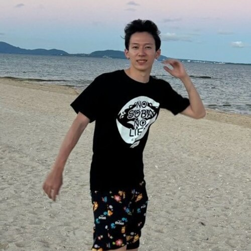

Hi, I'm an M2 student at The University of Tokyo, advised by Prof. Yoichi Sato. My research interests include 3D hand pose and motion estimation from images and videos, and modeling hand-object interaction.
I'm also a research assistant at the National Institute of Informatics (NII), working with Shuhei Kurita and Satoshi Ikehata.
E-mail: narus [at] iis [dot] u-tokyo [dot] ac [dot] jp
Google Scholar /
GitHub /
LinkedIn /
X

Affordance-Guided Diffusion Prior for 3D Hand Reconstruction
European Conference on Computer Vision (ECCV), 2026
HANDS Workshop at ICCV, 2025 (Extended Abstract)
The 29th Meeting on Image Recognition and Understanding (MIRU)
August 2026 [webpage]